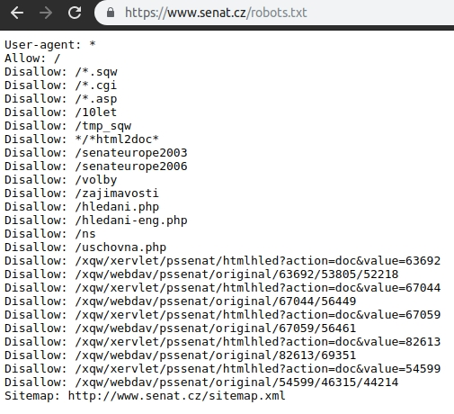
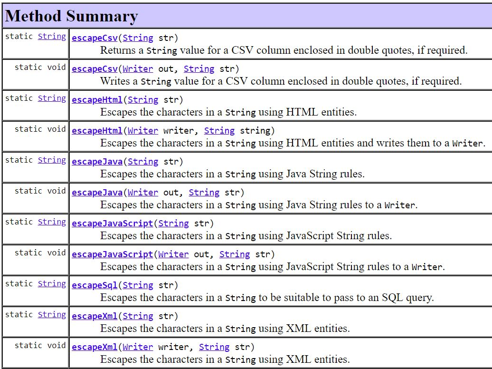

| Pořadatel | Konference | Gold partner | Generální partner | |

|

|

|
|
|
| Pořadatel | Konference | Gold partner | Generální partner | |
|
|
|
|
|
|
Jan @Novoj Novotný
O mně
|
Exponované aplikace |
mě ano
f(náklady prolomení, znalosti) > f(chráněná hodnota, komplexita, náklady zabezpečení, znalosti)Hacking je dnes již průmysl. Hackitivsm je otázka minulosti.
kobercové nálety na nejrozšířenější software využívající známých exploitů
brute force útoky a automatizované testy např. na SQL injection
DOS útoky
Spočívá v úpravě vstupních parametrů aplikace
Zajímavé cíle
|
Nástroje |
A zneužití nedostatečné kontroly na straně aplikace.
lze obecně kdekoliv, kde se nějakému engine předává dotaz ve formě textu:
Pokud taková zranitelnost existuje je velká pravděpodobnost, že útočník získá VŠECHNA data.
Útočník může přes SQL injection i číst a zapisovat soubory na serveru s oprávněním jaké má aplikace.
V některých DB, pokud je to povoleno může útočník i spouštět příkazy OS.
Čím více toho engine umí, tím je pro vás nebezpečnější. Jenže vývojáři mají rádi mocné stroje.
Díky bezpečnostním otázkám přišel americký daňový úřad v roce 2015 o desítky milionů $.
Další doporučení naleznete v OWASP cheatsheetu
Další doporučení naleznete v OWASP cheatsheetu

Aplikace kontroluje, zda mohu něco udělat, ale už nekontroluje s čím to dělám.
Příklad: rajce.net má soukromá alba obrázků, která nezobrazí cizím, z obrázků je možné si nechat udělat fyzické obrázky a nechat si poslat poštou, při přidávání do košíku bylo možné si přes odhadnutí ID nechat vyrobit zamčené fotografie cizích lidí
Některé aplikace (a dříve i Windows) řeší práva tak, že nezobrazí linky / tlačítka pro provedení akce. Pokud ale uživatel zná správnou kombinaci URL, tak může akci provést. Typicky platí pro systémy, které na oprávnění nebyly připravované od začátku.
útočník zneužije uživatele, aby sám nevědomě odeslal potřebné požadavky serveru
Zranitelné HTTP metody: GET a POST
Pro GET je možné využít IMG a LINK/SCRIPT tagy.
Nebezpečné v kombinaci s funkcionalitou "trvalého přihlášení"
Příznak u cookie zamezí zaslání této cookie ze stránky na jiné doméně. Má dva režimy:
Je již rozumně podporované v současných prohlížečích.
Útočník na své stránce vyrobí iframe a otevře v ní aplikaci, na kterou chce útočit. Iframe nastaví jako průhledný (opacity), takže ji uživatel nevidí i když do ní kliká. Iframe může mít velikost i jen 1x1px a útočná stránka bude pohybovat výřezem tak, aby se klikalo na "správná" místa. Iframe pak putuje spolu s kurzorem myši uživatele.
Nemusí jí jen o klikání, ale i vyplňování formulářů a drag'n'drop operace.
Pomocí adresy view-source:https://www.domain.cz a drag'n'drop je možné přesvědčit uživatele, aby nevědomky poslal útočníkovi obsah stránky načtené přes HTTPS i s CSRF tokenem.
Používá se v kombinaci se sociálním inženýrstvím.
Použití Content Security Policy a direktivy frame-ancestors. Funkčně analogická k X-Frame-Options
Content-Security-Policy: frame-ancestors 'none';
Použití hlavičky X-Frame-Options pro povolení otevření aplikace v rámu.
Proč bych měl přístup k tomuto skriptu zaheslovat, když nikdo neví jaké je jeho URL?
ČR má i slavnou kauzu týkající se nezabezpečeného directory listingu: Porno na webu poslanecké sněmovny
Roboti automatizovaně prohledávají internet po specificky pojmenovaných souborech.
index.bak, index.old, index.php~, index.php_, backup.sqlK vyhledání můžete použít třeba google:
filetype:php_ "password"site:home.tiscali.cz "index of"Celá řada SW je instalována jako prostý "pull" z repository zdrojového kódu. Tedy zdrojové kódy leží často na produkčních serverech. V roce 2015 se zjistilo, že velké množství těchto repositářů je veřejně přístupných.

Zneužití obrovských a rozličných možností XML parserů.
XML je možná trochu zastaralý formát, ale je všude a díky jeho benefitům
(čitelnost, schéma, web-services standardy) tu ještě nějakou dobu bude.
<?xml version="1.0" encoding="UTF-8"?>
<!DOCTYPE note
[
<!ELEMENT note (to,from,heading,body)>
<!ELEMENT to (#PCDATA)>
<!ELEMENT from (#PCDATA)>
<!ELEMENT heading (#PCDATA)>
<!ELEMENT body (#PCDATA)>
<!ENTITY friend "Jani">
]>
<note>
<to>Tove</to>
<from>&friend;</from>
<heading>Reminder</heading>
<body>Don't forget me this weekend!</body>
</note>
Více detailů o XML zranitelnostech.
Uživateli umožníme vložit část, která XML poškodí.
<?xml version="1.0" encoding="UTF-8"?>
<note>
<to>Tove < </to>
</note>
Někdy nám server může vrátit takto hezky návodnou chybu včetně prozrazení interní struktury serveru.

Uživateli umožníme vložit spustitelný kód:
<?xml version="1.0" encoding="UTF-8"?>
<note>
<to>Tove >script<alert(1)>/script<</to>
</note>
<?xml version="1.0" encoding="UTF-8"?>
<users>
<user>
<login>Tove</login>
<pwd>heslo</pwd>
<role>user</role>
</user>
</users>
Uživatel si následně založí účet s přihlašovacím jménem:
Jan&lt;/login></user><user><login>Hacker</login><pwd>heslo</pwd><role>admin</role></user><user><login>
<?xml version="1.0" encoding="UTF-8"?>
<users>
<user>
<login>Tove</login>
<pwd>heslo</pwd>
<role>user</role>
</user>
<user>
<login>Jan</login>
</user>
<user>
<login>Hacker</login>
<pwd>heslo</pwd>
<role>admin</role>
</user>
<user>
<login></login>
<pwd>heslo</pwd>
<role>user</role>
</user>
</users>
<?xml version="1.0" encoding="utf-8"?>
<!DOCTYPE contacts [
<!ENTITY entita SYSTEM "/etc/passwd">
]>
<contacts>
<contact>
<login>soubor</login>
<name>&entita;</name>
</contact>
</contacts>
<?xml version="1.0" encoding="utf-8"?>
<!DOCTYPE contacts [
<!ENTITY entita SYSTEM "http://www.target.com?attack-string">
]>
<contacts>
<contact>
<login>soubor</login>
<name>&entita;</name>
</contact>
</contacts>
<?xml version="1.0" encoding="utf-8"?>
<!DOCTYPE contacts [
<!ENTITY entita SYSTEM "/dev/random">
]>
<contact>
<login>soubor</login>
<name>&entita;</name>
</contact>
<?xml version="1.0" encoding="utf-8"?>
<!DOCTYPE lolz [
<!ENTITY lol "lol">
<!ENTITY lol1 "&lol;&lol;&lol;&lol;&lol;&lol;&lol;&lol;&lol;&lol;">
<!ENTITY lol2 "&lol1;&lol1;&lol1;&lol1;&lol1;&lol1;&lol1;&lol1;&lol1;&lol1;">
<!ENTITY lol3 "&lol2;&lol2;&lol2;&lol2;&lol2;&lol2;&lol2;&lol2;&lol2;&lol2;">
<!ENTITY lol4 "&lol3;&lol3;&lol3;&lol3;&lol3;&lol3;&lol3;&lol3;&lol3;&lol3;">
<!ENTITY lol5 "&lol4;&lol4;&lol4;&lol4;&lol4;&lol4;&lol4;&lol4;&lol4;&lol4;">
<!ENTITY lol6 "&lol5;&lol5;&lol5;&lol5;&lol5;&lol5;&lol5;&lol5;&lol5;&lol5;">
<!ENTITY lol7 "&lol6;&lol6;&lol6;&lol6;&lol6;&lol6;&lol6;&lol6;&lol6;&lol6;">
<!ENTITY lol8 "&lol7;&lol7;&lol7;&lol7;&lol7;&lol7;&lol7;&lol7;&lol7;&lol7;">
<!ENTITY lol9 "&lol8;&lol8;&lol8;&lol8;&lol8;&lol8;&lol8;&lol8;&lol8;&lol8;">
]>
<lolz>&lol9;</lolz>
Podobným problémem může trpět i váš YAML parser.
Podvržení spustitelného JavaScript kódu to těla cizí stránky. Možností, jak XSS provést je velmi mnoho - doporučuji alespoň prolistovat knihu XSS v praxi (přes 300 stránek), která je sice už starší, ale pořád dává slušný přehled o tom, co lze s XSS provádět.
Jediná skutečně efektivní obrana proti XSS.
script-src 'self' www.google-analytics.com ajax.googleapis.com;Je možné provozovat i pouze jen v "reportovacím režimu" (existují služby pro zpracování dat)
Problémem je, že pro odlišné "formáty" je nutné escapovat odlišně. Existuje celá řada escapovacích funkcí:
Útok pomocí zneužití navigace v adresářové struktuře. Nelze se spolehnout na to, že na OS
nelze pojmenovat soubor, který by obsahoval znaky: /.:, pomocí BurpProxy lze
podvrhnout cokoliv.
Pokud má uživatel možnost uploadovat soubory, může také zkusit uploadnout soubor s názvem:
../../../../../../etc/passwdnebo
..%2F..%2F..%2F..%2F..%2F..%2Fetc%2FpasswdA následně si ho stáhnout :)
U interpretovaných jazyků (PHP, JavaScript) se útočník může pokusit nahrát soubor na server do složky se zdrojovými soubory a nechat ho v rámci běžné obsluhy požadavku vyhodnotit.

Credits: Local File Inclusion at Ikea.com
Zdroje:
Kontaktujte mě na @Novoj nebo novotnaci@gmail.com